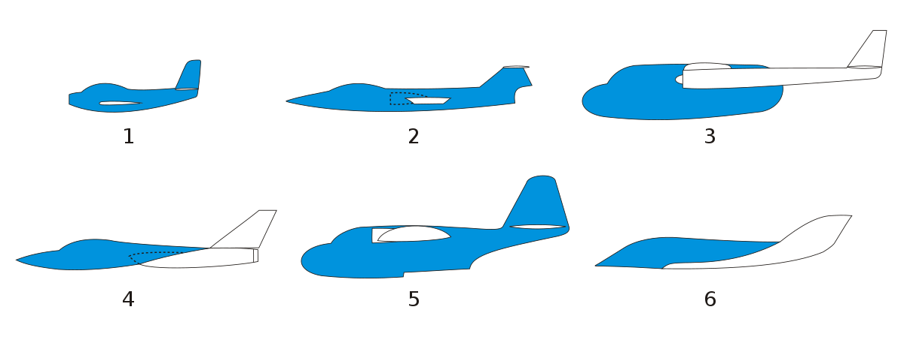

Tipos de fuselaje
El fuselaje es el cuerpo principal del avion y esta destinado a albergar los pilotos, pasjeros o carga.
tiene una forma longitudinal con seccion circular o eliptica, estando unido a la ala que sostiene.
El fuselaje se puede construir con estructura de madera, sin embargo el mas usado es el monocasco (tipo de
chasis construido de una sola pieza).

La parte del motor se le llama como morro o nariz, en la que contiene los mandos y conductos que comunican
con
los instrumentos del panel, esto con el fin de separar el motor de la cabina para aislar al piloto de un
posible
incendio y tambien para reducir el ruido en cabina.
-
Fuselaje monocasco: También conocido como estructura tipo "shell", es un diseño en el que el fuselaje es una
única pieza sólida que proporciona resistencia y rigidez.
-
Fuselaje de tubo y tela: Un diseño más antiguo en el que el fuselaje está compuesto por una estructura de
tubos
de metal recubiertos con tela.
-
Fuselaje semimonocasco: Una variante intermedia entre el fuselaje monocasco y el de tubo y tela. Combina
estructuras de tubos con secciones de revestimiento sólido.
-
Fuselaje de materiales compuestos: Utiliza materiales como fibra de carbono, kevlar y resinas para construir
un
fuselaje ligero y resistente.
-
Fuselaje de ala volante: Algunos diseños experimentales presentan una integración de las alas en el
fuselaje,
creando una sola estructura tipo ala-fuselaje.
-
Fuselaje de doble burbuja: Presenta una sección transversal con dos burbujas o protuberancias, permitiendo
un
espacio interior más amplio.
-
Fuselaje de cuerpo ancho (wide-body): Caracterizado por tener una cabina de pasajeros más amplia, a menudo
con
dos pasillos, permitiendo mayor capacidad de pasajeros.
-
Fuselaje de cuerpo estrecho (narrow-body): Tiene una cabina más delgada con un solo pasillo, adecuado para
vuelos de menor distancia.
-
Fuselaje de doble pasillo: Se refiere a aviones con dos pasillos paralelos en la cabina de pasajeros, lo que
permite un mayor flujo de pasajeros.
-
Fuselaje de alta velocidad: Diseñado para minimizar la resistencia aerodinámica y optimizar la velocidad, a
menudo con una forma delgada y estilizada.
-
Fuselaje de baja observabilidad (stealth): Utiliza técnicas de diseño y materiales para reducir la detección
por
radar y minimizar la firma electromagnética.
-
Fuselaje presurizado: Diseñado para mantener una presión habitable en altitudes de crucero,
proporcionando
comodidad a los pasajeros y tripulación.


 Aviones
Aviones